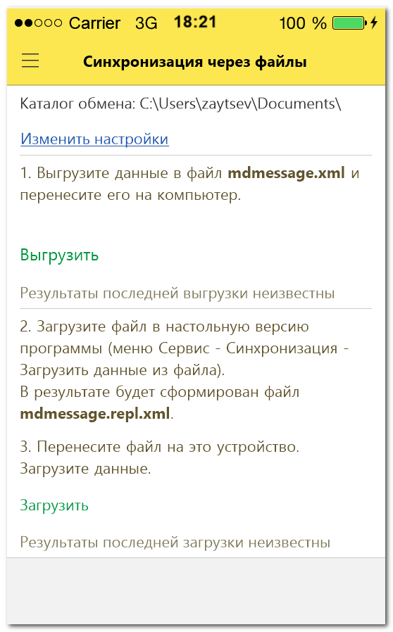

Иногда автоматическая передача файлов между устройством и настольной программой может быть недоступна, например, из-за проблем с сетью, нахождением в роуминге и т.д. Но возможность синхронизировать данные остается и в этом случае - с помощью ручной передачи файлов с мобильного устройства на компьютер и обратно.
Поряок синхронизации через файлы:
1. Запустите приложение Миниденьги на мобильном устройстве, в меню выберите команду Синхронизация через файлы. Если до этого обмен файлами никогда не осуществлялся, программа предложит указать каталог для выгрузки и загрузки файлов. Инача сразу откроется диалог синхронизации через файлы.

В диалоге синхронизации нажмите ссылку Выгрузить. Программа запишет все операции, кошельки, статьи, курсы валют и прочую информацию, измененную на мобильном устройстве с момента последней синхронизации, в файл mdmessage.xml в указанный в настройках каталог.
2. Переместите файл mdmessage.xml с мобильного устройства на компьютер любым доступным вам способом: по bluetooth, по кабелю, с помощью электронной почты, или как-то еще.
3. На компьютере запустите программу 1С:Деньги 8, выберите в меню Сервис команду Cинхронизация с мобильными устройствами.
В диалоге синхронизации кликните мышью по ссылке Загрузить файлы, скопированные с мобильного устройства, или выберите одноименную команду в меню Управление…
Укажите файл, полученный с мобильного устройства, и дождитесь, пока программа в этом же каталоге поместит ответный файл mdmessage.repl.xml.
4. Переместите файл mdmessage.repl.xml на мобильное устройство в каталог, указанный в настройках синхронизации.
5. На мобильном устройстве снова откройте приложение Миниденьги, выберите в меню команду Синхронизация через файлы и нажмите кнопку Загрузить.
После успешной обработки данных синхронизация будет завершена.